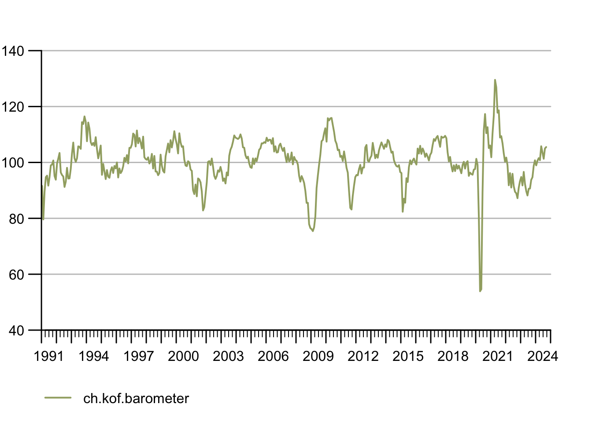
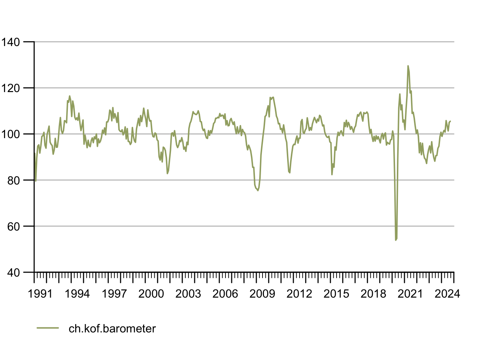

library(kofdata)
# just for viz
library(tstools)
tsl <- get_time_series("ch.kof.barometer")
tsplot(tsl)
While the rest of the book provided more of a big picture type of insight, this section is all about application-minded examples that most of the time feature code to reproduce.
This section could be headed “log in like a developer”. SSH Key Pairs (often referred to as “RSA key pairs” because of the popular RSA encryption process) are a convenient, relatively secure way to log into an account. SSH-based connections, including secure copy (SCP), often make use of SSH Key Pairs instead of using a combination of username and password. Also, most git platforms use this form of authentication. The basic idea of key pairs is to have a public key and a private key. While the private key is never shared with anyone, the public key is shared with any server you want to log in to. It’s like getting a custom door for any house that you are allowed to enter: share your public key with the server admin/web portal, and you’ll be allowed in when you show your private key. In case you lose your private key or suspect it has been stolen, simply inform the admin, so they can remove the door (public key). This is where a little detail comes into play: you can password protect the authentication process. Doing so buys you time to remove the key from the server before your password gets brute-forced. The downside of this additional password is its need for interaction. So, when you are setting up a batch that talks to a remote server, that is when you do not want a key without a password.
Step one en route to logging in like a grown up, is to create an RSA key pair. GitHub has a [1-2-3 type of manual1 to get it done. Nevertheless, I would like to show the TL;DR R Studio (Server) specific way here.
An Application Programming Interface (API) is an interface to facilitate machine-to-machine communication. An interface can be anything, any protocol or pre-defined process. But, of course, there are standard and not-so-standard ways to communicate. Plus some matter-of-taste types of decisions. But security and standard compliance are none of the latter. There are standards such as the popular, URL-based REST that make developers’ lives a lot easier – regardless of the language they prefer.
Many services such as Google Cloud, Amazon Webservices (AWS), your university library, your favorite social media platform or your local metro operator provide an API. Often, either the platform itself or the community provides what’s called an API wrapper: A simple program wraps the process of using the interface through dynamic URLs into a parameterized function. Because the hard work is done server-side by the API backend, building API wrappers is fairly easy, and, if you’re lucky, wrappers for your favorite languages exit already. If that is the case, end users can simply use functions like get_dataset(dataset_id) to download data programmatically.
The KOF Swiss Economic Institute at ETH Zurich provides such a wrapper in the {kofdata} R package (Bannert and Thoeni 2022). The underlying API allows access to the KOF time series archive database and to obtain data and meta information alike. The below code snippet gets data from the API and uses another KOF built library (the {tstools} R package (Bannert, Thoeni, and Bisinger 2023)) to visualize the returned time series.
library(kofdata)
# just for viz
library(tstools)
tsl <- get_time_series("ch.kof.barometer")
tsplot(tsl)
Here’s an example of an elementary API wrapper that makes use of the Metropolitan Museum of Modern Art’s API to obtain identifiers of pictures based on a simple search2.
library(jsonlite)
# Visit this example query
# https://collectionapi.metmuseum.org/
# public/collection/v1/search?q=umbrella
# returns a json containing quite a few
# ids of pictures that were tagged 'umbrella'
#' Search MET
#'
#' This function searches the MET's archive
#' for keywords and returns object ids of
#' search hits. It is a simple wrapper
#' around the MET's Application Programming
#' interface (API). The function is designed
#' to work with other API wrappers
#' and use object ids as an input.
#' @param character search term
#' @return list containing the total
#' number of objects found and a
#' vector of object ids.
#'
# Note these declarations are not relevant
# when code is not part of a package,
# hence you need to call library(jsonlite)
# in order to make this function work if
# you are not building a package.
#' @examples
#' search_met("umbrella")
#' @importFrom jsonlite formJSON
#' @export
search_met <- function(keyword){
# note how URLencode improves this function
# because spaces are common in searches
# but are not allowed in URLs
uri <- "https://collect..."
url <- sprintf(uri,
URLencode(keyword))
fromJSON(url)
}You can use these IDs with another endpoint to receive the pictures themselves3.
download_met_images_by_id <-
function(ids,
download = "primaryImage",
path = "met") {
# Obtain meta description objects from MET API
obj_list <- lapply(ids, function(x) {
uri <- "https://collect..."
req <- download.file(sprintf(uri,
x),destfile = "temp.json")
fromJSON("temp.json")
})
public <- sapply(obj_list, "[[", "isPublicDomain")
# Extract the list elements that contains
# img URLs in order to pass it to the download function
img_urls <- lapply(obj_list, "[[", download)
# Note the implicit return, no return statement needed
# last un-assigned statement is returned
# from the function
for (x in unlist(img_urls[public])){
download.file(x, destfile = sprintf("%s/%s",
path, basename(x)))
}
message(
sprintf("
The following images ids were not public
domain and could not be downloaded:\n %s",
paste(ids[!public], collapse = ",")
))
message(
sprintf("
The following images ids were public
domain and could be downloaded to\n %s: %s",
path, paste(ids[public], collapse = ",")
))
}Finally, execute the functions: first, search for images with umbrellas, second, download these images by ID. Note that even if I do not display the image itself in the book to err on the side of caution w.r.t. to image property rights, the below code shows availability is checked, and an image is actually downloaded to a previously created folder called met.
# Step 4: Use the Wrapper
umbrella_ids <- search_met("umbrella")
umbrella_ids$total[1] 746head(umbrella_ids$objectIDs)[1] 491511 19840 19958 9167 122311 121842download_met_images_by_id(umbrella_ids$objectIDs[30:33])
The following images ids were not public
domain and could not be downloaded:
121919,121922,121809
The following images ids were public
domain and could be downloaded to
met: 157159dir("met")character(0)Wonder what’s really in the image? Umbrella or not :)? Try to reproduce this example or come up with your own wrapper from scratch.
The ability to expose data is a go-to skill to make research reproducible and credible. Especially when data get complex and require thorough description in order to remain reproducible for others, a programmatic, machine-readable approach is the way to go.
Exposing your data through an API is not something for which you would necessarily need a software engineer, let alone your own server infrastructure for. Simply hosting a bunch of .csv spreadsheets alongside a good description (in separate files!!) on, e.g., GitHub for free is an easy and highly available solution.
The swissdata project4 proposes an implementation of such an approach. The project transforms all sorts of datasets into .csv spreadsheets to contain a cleaned version of the data alongside .json files that contain the data descriptions. The demo5 describes the implementation in a greater detail and hands on fashion.
If you add a naming convention for your files to such an implementation, you already have a solid interface to a data science environment. Consider the following simple R wrapper that downloads both data and metadata first and then reads both into R6. (Alternatively, direct streaming would be possible, too.)
library(jsonlite)
download_swissdata <- function(dataset){
d_ext <- ".csv"
m_ext <- ".json"
d <- sprintf("%s%s", dataset, d_ext)
m <- sprintf("%s%s", dataset, m_ext)
gh_url <- "https://raw.git...")
download.file(file.path(gh_url, d), d)
download.file(file.path(gh_url, m), m)
}
download_swissdata("ch_adecco_sjmi")Now, read the data from disk into your R session
d <- read.csv("ch_adecco_sjmi.csv")
head(d) idx_type date value
1 sch 2003-03-01 31.9
2 pzua 2003-03-01 12.9
3 ins 2003-03-01 4.9
4 unw 2003-03-01 14.2
5 sch 2004-03-01 36.4
6 pzua 2004-03-01 12.2As well as the nested meta information{nested data}. JSON maps 1:1 to R lists. Hence, both the on-disk representation and the in-memory representation are equally well suited for nested data. The below example shows a sub-label element containing description in multiple languages.
m <- fromJSON("ch_adecco_sjmi.json")
m$labels$idx_type$unw$en
[1] "Company websites"
$de
[1] "Unternehmens-Webseiten"
$fr
named list()
$it
named list()Note, standard GitHub repositories are not well suited to host larger files or binaries. Check out their file hosting offering or consider other services focused on files.
Even, going past serving static files, does not require much software development expertise. Thanks to frameworks such as express.js or the {plumbr} package in the R ecosystem, it is easy to create an API that turns an URL into a parameterized server-side action. Before we look at one of those frameworks in greater detail, let’s take a look at the two most common HTTP request methods7 GET and POST.
According to Mozilla’s definition, the GET method “requests a representation of the specified resource. Requests using GET should only retrieve data,” while POST “submits an entity to the specified resource, often causing a change in state or side effects on the server”. Obviously, there are many other methods for the HTTP protocol, but the above two should help to understand the idea behind standard compliant REST web application programming interfaces.
Let’s assume you have a working nodejs8 JavaScript runtime environment installed on your local development machine, so you can run JavaScript files outside a web browser. Such a setup mimics the situation on a web server with Node.js installed. Also, let’s assume you have npm9 installed as a package manager to facilitate installing node packages from the npm open source package registry.
First, create a folder api, go to the freshly created directory and initiate a node package.
# run initialization in a dedicated folder
mkdir api
cd api
mkdir public
npm initJust sleepwalk through the interactive dialog accepting all defaults. This created a package.json file to keep track of dependencies and their package versions used in your project. Once done, add express using the npm package manager.
npm install expressNow, that we installed the JavaScript framework Express.js, we can use the framework to create a minimal web application that serves an API endpoint using the node runtime environment. Consider a minimal hello-world example that does about the same as the static file example of the previous action:
const express = require('express')
const app = express()
const port = 3000
app.get('/', (req, res) => {
res.send('Hello World!')
})
app.use('/static', express.static('public'))
app.listen(port, () => {
console.log(`RSE demo app listening on port ${port}`)
})The first app.get route simply maps the root, a plain, un-nested starting point so to say, in our case localhost:3000/ to the output of the res.send call. The second app command serves the content of the public folder to visitor’s of localhost:3000/static. So if a public/ folder inside the app folder contained a cover image of my Hacking for Science courses, this would be served at localhost:3000/static/h4sci.jpeg.
Now let us make use of server-side features beyond simply serving static files and add the need for an API key to get the picture.
const express = require('express')
const app = express()
const port = 3000
app.get('/', (req, res) => {
res.send('Hello World!')
})
app.use('/static', (req, res, next) => {
var key = req.query['api_key'];
if (!key) res.send('api key required');
if (apiKeys.indexOf(key) === -1) res.send('eh-eh,
wrong key.');
req.key = key;
next();
})
// NOTE THAT this is only a
// demo example (!)
// DO NOT use insecure passwords
// in production.
// Make sure to find better ways
// to secure your keys!
// also transferring keys in URLs
// via GET is not optimal,
// consider using an upfront
// authentication method
var apiKeys = ['abc','123'];
app.use('/static', express.static('public'))
app.listen(port, () => {
console.log(`RSE demo api listening on port ${port}`)
})We simply added a mount point using app.use (instead of app.get) which makes sure that everything past /static is affected by the logic added to this mount. So, our Hello World! greeting is out there for anybody to see, while displaying the picture whose URL starts with /static needs an API key. Though this is only one, admittedly made up example of mapping URLs and parameters to functions via HTTP(S), it hints at the possibilities of dynamic APIs from database queries to web forms and many other applications. The above example shows also how frameworks like Express JavaScript10 or plumber (Schloerke and Allen 2022) facilitate the definition of machine-to-machine interfaces even for less experienced developers. The impact of frameworks is not limited to the technical implementation, though. Developers benefit from comprehensive approaches like Swagger and the OpenAPI specification during the conceptual part of creating machine to machine interfaces.
Even though KOF Swiss Economic Institute offers a REST API to consume publicly available data, publication dates are unfortunately not available through in API just yet. Hence, to automate data consumption based on varying publication dates, we need to extract upcoming publication dates of the Barometer from KOF’s media release calendar. Fortunately, all future releases are presented online in an easy-to-scrape table. So, here’s the plan:
Use Google Chrome’s inspect element developer feature to find the X-Path (location in the Document Object Model) of the table.
Read the web page into R using rvest.
Copy the X-Path string to R to turn the table into a data.frame
Use a regular expression to filter the description for what we need.
First, let’s take a look at our starting point, the media releases sub-page, first.
The website looks fairly simple, and the jackpot is not hard, presented in a table right in front of us. Can’t you smell the data.frame already?
Right-click the table to see a Chrome context window pop up. Select inspect.
Hover over the highlighted line in the source code at the bottom. Make sure the selected line marks the table. Right click again, select copy → copy X-Path11.
On to R!
library(rvest)
# URL of the media release subsite
url <- "https://kof.ethz.ch..."
# Extract the DOM object from the path we've
# previously detected using
# Chrome's inspect feature
table_list <- url %>%
read_html() %>%
html_nodes(xpath = '
//html/body/div[6]/section/div/section
/div[2]/div/div[3]/div/div/div/
div/div/div/div/table') %>%
# turn the HTML table into an R data.frame
html_table()
# because the above result may potentially contain
# multiple tables, we just use
# the first table. We know from visual
# inspection of the site that this is the
# right table.
agenda_table <- table_list[[1]]
# *[@id="t-6b2da0b4-cec0-47a4-bf9d-
# bbfa5338fec8-tbody-row-2-cell-2"]
# extract KOF barometer lines
pub_date <- agenda_table[grep("barometer",
agenda_table$X3),]
pub_dateYay! We got everything we wanted. Ready to process.
containerization as described in the infrastructure section has standardized virtual hardware into building blocks that are available across different platforms and providers. This development has led to a wide array of offerings that allow us to run our code in a language-agnostic environment. In addition to the major cloud platforms, git providers that offer a CI/CD tool chain are a good option to run our code on a remote container. Though originally designed mostly for build automation, CI/CD such as GitHub actions can be used to automate a variety of tasks by running them on a container. Consider the following minimal R script that we will run on GitHub actions.
#!/usr/bin/env Rscript
library(knitr)
knit("README.Rmd")The script uses {knitr} to render an RMarkdown document to a Markdown document that is automatically rendered to a pretty HTML file when pushed to a repository hosted on GitHub.
Notice the common shebang comment that defines the executable for batch execution of a script file – in this case Rscript to run R outside of an interactive R session.
Embedded in a bit of descriptive text before and after the code, the main code chunk of the .Rmd template file is equally straightforward:
library(kofdata)
library(tsbox)
tsl <- get_time_series("ch.kof.barometer")
ts_plot(tsl$ch.kof.barometer)
cat(sprintf("last update on %s.",
as.character(Sys.Date())))We make use of the {kofdata} API wrapper to obtain data from the KOF Data API and use the {tsbox} to visualize the time series data we received. Finally, we print the system date of the runtime environment – in our case the GitHub Actions Docker container. Running the README.Rmd file yields two artifacts: (1) a README.md file and a (2) .png graph located in a figure/ folder. Because the above runs inside a temporary single purpose container, our workflow needs to make sure those artifacts are stored persistently.
The below .yaml file defines the environment and workflow for GitHub Actions. When located properly according to GitHub’s convention, i.e., in a hidden github/worflows folder, GitHub identifies the .yaml file as input and allows executing the workflow. (Standalone build tools like Woodpecker or other integrated CI/CD tools like GitLab CI/CD use very similar workflow definitions).
# Simple data transformation workflow
name: KOF Economic Barometer
# Controls when the action will run.
# Triggers the workflow on push or pull request
# events but only for the main branch
on:
workflow_dispatch
jobs:
kof:
runs-on: ubuntu-latest
container: rocker/verse
steps:
- uses: actions/checkout@v3
- run: git version
- run: rm -rf README.md
- run: |
Rscript -e \
&& 'install.packages(c("kofdata","tsbox"))'
chmod +x demo_gha.R
./demo_gha.R
- run: ls -lah
- run: |
git config --global --add safe.directory \
&& /__w/h4sci-gha-demo/h4sci-gha-demo
git config --global user.name \
&& "Matt Bannert"
git config --global user.email \
&& "mbannert@users.noreply.github.com"
git add figure README.md
git commit -m \
&& "Update README.md via GH Actions"
git pushFirst, the below file gives our workflow a name to identify the workflow among other workflows defined within the same repository. The on block defines what triggers the workflow. The workflow_dispatch option is a rather uncommon trigger, as it simply means the workflow can be triggered by pressing a button in GitHub’s Web GUI. Cronjob-based triggers or triggers based on git actions such as pushes to a certain branch are more common as we are looking to avoid interaction at runtime. Inside the job definitions itself, we first define the operating system of the host and the Docker image in which our process should run.
Then, walk through the single steps of our workflow. Notice that actions/checkout@v3 is different from the other steps because it is taken from GitHub’s marketplace for actions. Instead of writing standard operations, namely checking out the git repository we’re working with to the container that runs the action, from scratch, we use the marketplace action for that. Be aware though that there is a trade-off between convenience and transparency. When I was teaching this year and wanted to recycle an example from the previous year, it was not all that convenient. Only one year later, my example that leaned heavily on marketplace actions was not working anymore. What’s worse is that it was also relatively hard to debug because I had to deal with the inner workings of a dependency heavy implementation that I would not have implemented this way. If we look at the above steps after the checkout action, we see a list of simple steps that are easy to read: first, simply print the git version to make sure git is working inside the container, and we know its version in case we need to debug. Second, we remove the README.md file we have just checked out. This file will be replaced anyway, and we want to avoid any rights conflicts overwriting the file. Then we run R in batch to install two more specific packages to the R environment running inside the container. Because we use a pre-built tidyverse images from the rocker project, we do not have to install R itself and many common packages. We continue to use the chmod Linux command to change the access rights of our minimal R script. With the shebang comment inside the file, we can directly execute the .R file with the ./ prefix because it knows which executable to use to run it. Finally, we take a look at the content of the current folder before we commit and push all the files we generated back to our GitHub repository. After the process is done, the container will stop and removed.
Note that we can see all the output of the process from the GitHub actions menu on our repository’s website. This is why it’s useful to print outputs of intermediate steps.
Data visualization is a big reason for researchers and data analysts to look into programming languages. Programming languages do not only provide unparalleled flexibility, but they also make data visualization reproducible and allow placing charts in different contexts, e.g., websites, printed outlets or social media.
One of the more popular types of plots that can be created smoothly using a programming language is the so-called choropleth. A choropleth maps values of a variable that is available by region to a given continuous color palette on a map. Let’s break down the ingredients of the below map of Switzerland12.
First, we need a definition of a country’s shape. Those definitions come in various formats, from traditional shape files to web-friendly GeoJSON. Edzer Pebesma’s useR! 2021 keynote13 has a more thorough insight.
Second, we need some data.frame that simply connects values to regions. In this case, we use regions defined by the Swiss Federal Statistical Office (FSO). Because our charting library makes use of the GeoJSON convention to call the region label “name” we need to call the column that holds the region names “name” as well. That way, we can safely use defaults when plotting. Ah, and note that the values are absolutely bogus that came to my mind while writing this (so please do not mull over how these values were picked).
d <- data.frame(
name = c("Zürich",
"Ticino",
"Zentralschweiz",
"Nordwestschweiz",
"Espace Mittelland",
"Région lémanique",
"Ostschweiz"),
values = c(50,10,100,50,23,100,120)
)Finally, we are calling our charting function from the echarts4r package. {echarts4r} (Li et al. 2018) is an R wrapper for the feature-rich Apache Echarts JavaScript plotting library. The example uses the base R pipes (available from 4+ on, former versions needed to use pipes via extension packages.). Pipes take the result of one previous line and feed it as input into the next line. So, the data.frame d is linked to a charts instance and the name column is used as the link. Then a map is registered as CH and previously read JSON content is used to describe the shape.
d |>
e_charts(name) |>
e_map_register("CH", json_ch) |>
e_map(serie = values, map = "CH") |>
e_visual_map(values,
inRange = list(color = viridis(3)))Also note the use of the viridis functions which returns three values from the famous, colorblind friendly viridis color palette.
viridis(3)[1] "#440154FF" "#21908CFF" "#FDE725FF"Here’s the full example:
library(echarts4r)
library(viridisLite)
library(jsonlite)
json_ch <- jsonlite::read_json(
"https://raw.github..."
)
d <- data.frame(
name = c("Zürich",
"Ticino",
"Zentralschweiz",
"Nordwestschweiz",
"Espace Mittelland",
"Région lémanique",
"Ostschweiz"),
values = c(50,10,100,50,23,100,120)
)
d |>
e_charts(name) |>
e_map_register("CH", json_ch) |>
e_map(serie = values, map = "CH") |>
e_visual_map(values,
inRange = list(color = viridis(3)))To start, let me demystify the {shiny} R package (Chang et al. 2022). There are basically two reasons why so many inside data science and analytics have Shiny on their bucket list of things to learn. First, it gives researchers and analysts home court advantage on a web server. Second, it gives our online appearances a kick start in the dressing room.
Don’t be surprised though if your web development professional friend outside data science and analytics never heard of it. Compared to web frontend framework juggernauts such as react, angular or vue.js the Shiny web application framework for R is rather a niche ecosystem.
Inside the data science and analytics communities, fancy dashboards and the promise of an easy, low hurdle way to create nifty interactive visualizations have made {shiny} app development a sought-after skill. Thanks to pioneers, developers and teachers like Dean Attali, John Coene, David Granjon, Colin Fay and Hadley Wickham, the sky seems the limit for R Shiny applications nowadays.
This case study does not intend to rewrite {shiny}’s great documentation or blogs and books around it. I’d rather intend to help you get your first app running asap and explain a few basics along the way.
Stats and figures put together by academic researchers or business analysts are not used to spending a lot of time in front of the mirror. (Often, for the same reason as their creators: perceived opportunity costs.)
Shiny bundles years worth of limelight experience and online catwalk professionalism into an R package. Doing so allows us to use all this design expertise through an R interface, abstracting away the need to dig deep into web programming and frontend design (you know the HTML/CSS/JavaScript).
Let’s consider the following web frontend put together with a few lines of R code. Consider the following, simple web fronted that lives in a dedicated user interface R file, called ui.R:
library(shiny)
library(shinydashboard)
dashboardPage(
dashboardHeader(title = "Empty App"),
dashboardSidebar(),
dashboardBody(
fluidPage(
fluidRow(
box(title = "Configuration",
sliderInput("nobs",
"Number of Observations",
min = 100,
max = 10000,
value = 500),
sliderInput("mean_in","Mean",
min = 0,
max = 10,
value = 0),
sliderInput("sd_in","SD",
min = 1,
max = 5,
value = 1),
width = 4),
box(title = "Distribution",
plotOutput("dist"),
width = 8)
),
fluidRow(
box("Tabelle",
dataTableOutput("tab"),
width=12
)
)
)
)
)Besides the {shiny} package itself, the ecosystem around Shiny brings popular frontend frameworks from the world outside data science to R. In the above case, a boilerplate library for dashboards is made available through the add-on package {shinydashboard} (Chang and Borges Ribeiro 2021).
Take a moment to consider what we get readily available at our fingertips: Pleasant user experience (UX) comes from many things. Fonts, readability, the ability to adapt to different screens and devices (responsiveness), a clean, intuitive design and many other aspects. The {shinydashboard} package adds components like fluidPages or fluidRow to implement a responsive (Google me!), grid-based design using R. Note also how similar the hierarchical, nested structure of the above code is to HTML tagging. (Here’s some unrelated minimal HTML)
<!-- < > denotes an opening,
</ > denotes an end tag. -->
<html>
<body>
<!-- anything in between tags is affected by
the tags formatting.
In this case bold -->
<b> some bold title </b>
<p>some text</p>
</body>
</html>
{shiny} ships with many widgets14 such as input sliders or table outputs that can simply be placed somewhere on your site. Again, add-on packages provide more widgets and components beyond those that ship with Shiny.
While the frontend is mostly busy looking good, the backend has to do all the hard work, the computing, the querying – whatever is processed in the background based on user input.
Under-the-hood-work that is traditionally implemented in languages like Java, Python or PHP15 can now be done in R. This is not only convenient for the R developer who does not need to learn Java, it’s also incredibly comfy if you got data work to do. Or put differently: who would like to implement logistic regression, random forests or principal component analysis in PHP?
Consider the following minimal backend server.R file which corresponds to the above ui.R frontend file. The anonymous (nameless) function which is passed on to the ShinyServer function takes two named lists, input and output, as arguments. The named elements of the input list correspond to the widgetId parameter of the UI element. In the below example, our well-known base R function rnorm takes nobs from the input as its n sample size argument. Mean and standard deviation are set in the same fashion using the user interface (UI) inputs.
library(shiny)
shinyServer(function(input,output){
output$dist <- renderPlot({
hist(
rnorm(input$nobs,
mean = input$mean_in,
sd = input$sd_in),
main = "",
xlab = ""
)
})
output$tab <- renderDataTable({
mtcars
})
})The vector that is returned from rnorm is passed on to the base R hist which returns a histogram plot. This plot is then rendered and stored into an element of the output list. The dist name is arbitrary, but again it matched to the UI. The plotOutput function of ui.R puts the rendered plot onto the canvas, so it’s on display in people’s browsers. renderDataTable does so in analog fashion to render and display the data table.
The basic app shown above consists of an ui.R and a server.R file living in the same folder. The most straightforward way to run such an app is to call the runApp() function and provide the location of the folder that contains both of the aforementioned files.
library(shiny)
runApp("folder/that/holds/ui_n_server")This will use your machine’s built-in web server and run Shiny locally on your notebook or desktop computer. Even if you never put your app on a web server and run a website with it, it is already a legitimate way to distribute your app. If it was part of an R package, everyone who downloads your package could use it locally, maybe as a visual inspection tool or a way to derive inputs interactively and feed them into your R calculation.
Truth be told, the full hype and excitement of a Shiny app only comes into play when you publish your app and make it available to anyone with a browser, not just the R people. Though hosting is a challenge in itself, let me provide you a quick Shiny specific discussion here. The most popular options to host a Shiny app are
Software-as-a-service (SaaS). No maintenance, hassle-free, but least bang for the buck. The fastest way to hit the ground running is R Studio’s service shinyapps.io.
On premise, aka in-house. Either download the open source version of Shiny server, the alternative Shiny proxy or the Posit Connect premium solution and install them on your own Virtual Machine.
Use a Shiny server Docker image and run a container in your preferred environment.
One of the cool things of learning shiny is how Shiny, and its ecosystem, allow you to learn quickly. Here are some of my favorite resources to hone your Shiny skills.
R Studio Shiny’s Widget Gallery: https://shiny.rstudio.com/gallery/widget-gallery.html
shinydashboard (Chang and Borges Ribeiro 2021): https://rstudio.github.io/shinydashboard
Mastering Shiny (Wickham 2021): (https://mastering-shiny.org/)
Engineering Production Grade Shiny Apps (Fay et al. 2021): https://engineering-shiny.org/
RInterface by David Granjon, John Coene, Victor Perrier and Isabelle Rudolf: https://rinterface.com/
The art of stress-free productivity, as I once called it in 2010 blog post, has put a number of gurus on the map and a whole strand of literature on our bookshelves. So, rather than adding to that, I would like to extract a healthy, best-of-breed type of dose here. The following few paragraphs do not intend to be comprehensive, not even for the scope of software projects, but inspirational.
In the software development startup community, the waterfall approach became synonymous to conservative, traditional and ancient: Over specification in advance of the project, premature optimization and a lawsuit over expectations that weren’t met. Though, waterfall projects may be better than their reputation, specifications should not be too detailed and rigid.
Many software projects are rather organized in agile fashion, with SCRUM and KANBAN being the most popular derivatives. Because empirical academic projects have a lot in common with software projects inasmuch that there is a certain expectation and quality control, but the outcome is not known in advance. Essentially, in agile project management you roughly define an outcome similar to a minimum viable product (MVP). That way, you do not end up with nothing after a year of back and forth. During the implementation you’d meet regularly, let’s say every 10 days, to discuss development since the last meet and the short-term plans for the steps ahead. The team splits work into tasks on the issue tracker and assigns them. Solutions to problems will only be sketched out and discussed bilaterally or in small groups. By defining the work package for only a short timespan, the team stays flexible. In professional setups, agile development is often strictly implemented and makes use of sophisticated systems of roles that developers and project managers can get certified for.
Major git platforms ship with a decent, carpentry-level project management GUI. The issue tracker is at the core of this. If you use it the minimal way, it’s simply a colorful to-do list. Yet, with a bit of inspiration and the use of tags, comments and projects, an issue tracker can be a lot more.
Swim lanes (reminiscent of a bird’s-eye view of an Olympic pool) can be thought of columns that you have to walk through from left to right: To Do, Doing, Under Review, done. (you can also customize the number and label of lanes and event associate actions with them, but let’s stick to those basic lanes in this section.) The idea is to use to keep track of the process and make the process transparent.
No lane except “Done” should contain more than 5–6 issues. Doing so prevents clogging the lanes at a particular stage which could potentially lead to negligent behavior, e.g., careless reviews.
The idea of having multiple workers at your disposal to fix your math problem even quicker than one smart worker seems equally appealing to third graders and researchers. Very much like in school, the ability to assess whether getting help in the first place is worth the overhead and what type of help to get, is the most important skill. The classical challenge where parallel computation using multiple cores really helps is throughput problems, i.e., problems where your tasks are independent of each other. Yet, it may not be clear up-front if the number and computation time of your single tasks justifies the overhead of letting your program know it should split computations across cores and manage memory accordingly. Also, consider that processes can be turned parallel at different levels: you could simply use your local machine’s cores and a parallelization implementation such as R’s {future} (Bengtsson 2021) or {parallel} packages to parrallelize locally. Or you could go parallel at a machine or container level. While the former is easier as it requires less infrastructure knowledge, it is limited by the resources of your local machine. Of course, if you have access to a HPC cluster, this may not be a disadvantage at all (depending on how your cluster balances load and manages access to resources). In any case, you should make a clear decision at which level you go parallel and avoid nested parallelization.
Let’s consider the following example of a simple local parallelization, including a performance benchmark. The following R example uses the {microbenchmark} R package (Mersmann 2021) to check the effect of parallel computing on running seasonal adjustment of multiple time series. Before we start with the actual example, let’s create some demo data: We simply create a list with 1000 elements, each of which is the same monthly time series about airline passengers from 1949 to 1960.
data("AirPassengers")
tsl <- list()
for(i in 1:1000){
tsl[[i]] <- AirPassengers
}Now, let’s load the {seasonal} R package (Sax and Eddelbuettel 2018) and perform a basic seasonal adjustment of each of these time series. The first statement performs 100 adjustments sequentially; the second statement uses parallel computing to spread computations across the processors of the machine that ran this example.
library(seasonal)
library(parallel)
library(microbenchmark)
no_parallel <- function(li, s){
lapply(li[s],seas)
}
with_parallel <- function(li, s){
out <- list()
cl <- makeCluster(detectCores())
# load 'seasonal' for each node
clusterEvalQ(cl, library(seasonal))
parLapply(cl, li[s], function(e) try(seas(e)))
stopCluster(cl)
}
out <- microbenchmark(
noparallel10 = no_parallel(tsl, 1:10),
withparallel10 = with_parallel(tsl, 1:10),
noparallel100 = no_parallel(tsl, 1:100),
withparallel100 = with_parallel(tsl, 1:100),
times = 5,
unit = "seconds"
)
d <- summary(out)Obviously, the absolute computation time depends on the hardware used as well as the operating system, depending on the task at hand.
As expected, given the perfect independence of the tasks from each other, performance gains are quite substantial (~5.5 times faster) for the above example, though not perfect (on my 8-core machine). Advanced parallel implementations and deeper dives into the way different processors work may further optimize efficiency here.
library(kableExtra)
kable(d[,c(1:4)],"latex",
booktabs = TRUE,
escape= FALSE) |>
kable_styling(
latex_options = c("repeat_header")
) |>
column_spec(1:2, width = "2.5cm")
kable(d[,c(1,5,6,7)],"latex",
booktabs = TRUE,
escape= FALSE) |>
kable_styling(
latex_options = c("repeat_header")
) |>
column_spec(1:2, width = "2.5cm")Yet, the key takeaway from the above exercise is not the parallel computation itself, but the ability to evaluate the need to go parallel and how. Benchmarking does not only help to get a ballpark estimate of the costs should you go outside for more computational power, it gives you an idea whether the gains from a parallel approach are worth the hassle. In other words, of course a computation running four to five times faster than before sounds spectacular, but what if the total runtime is less than a few minutes either way? Development time, particularly for newcomers, is very likely longer than a few minutes. Plus, going parallel jeopardizes your cross-platform compatibility depending on the parallel implementation you use.
Another good use of benchmarking is to run a few smaller case experiments to get an idea of how performance gains evolves when we throw more work at our system. Unlike the below example, performance gains do not necessarily have to be linear. Visualization can give us a better idea.
library(ggplot2)
library(viridis)
vizframe <- d[,c(1,5)]
vizframe$iterations <- as.character(c(10,10,100,100))
vizframe$parallel <- c("no","yes","no","yes")
names(vizframe)[2] <- "seconds"
gg <- ggplot(
vizframe[,-1],
aes(fill = parallel,
y = seconds,
x = iterations))
gg +
geom_bar(position = "dodge",
stat = "identity") +
coord_flip() +
scale_fill_viridis(discrete = T) +
theme_minimal()Even though I cannot really aim for a comprehensive section on the Do’s and Dont’s, I would like to share a few common-sense practices here. If you are interested in a more thorough but rather R specific collection, take a look at the wonderful online book What They Forgot to Tell Us About R: https://rstats.wtf/.
Do NOT Set Static Working Directories in Your Code
Like C:\Users\MatthiasBannert\My Documents\R Course\. Locations that only exist in your own environment have you set up for trouble before you even started.
Please,
resist that visceral urge to define the project root folder somewhere at the beginning of your code because your collaborators usually do not have a directory on their machine that bears your name. That might not even use the same operating system. And before you ask, simply putting the neutrally named folder on a shared NAS storage or service such as Dropbox is not really better.
avoid spaces in folder and file names. Though modern operating systems and most languages can handle spaces, you might need to escape certain characters and make a beginner’s life much harder. The same holds for umlauts and other hieroglyphic characters. Simply use lower-case and either kebab-case or snake_case.
work with projects of your favorite IDE. The idea of projects is to make a folder the document root of your project. That way, your code can reference to other files inside this project root in relative fashion, no matter where the project itself is located.
Take Time To Learn How To Play the “Piano”
There is no need to become a vim virtuoso (that’s essentially Lang Lang status on a computer keyboard), but make sure to learn some basic shortcuts of your environment that help you avoid touching the mouse or trackpad. Like ctrl+L to clear the screen, cmd+tab to switch between applications, cmd+w to close windows, ctrl+number to switch between tabs and, most importantly, some shortcut to execute the selected line of code (often cmd+enter, ctrl+enter or shift+enter depending on your operating system). Note that this is really not so much about a specific programming language, but more about the environment you work in.
Manage Dependencies at the Project Level
JavaScript projects manage dependencies in their lock files, Python projects have their requirements.txt files, and R has the {renv} package (Ushey and Wickham 2023). All these scripting languages can keep track of the exact library versions used in a project.
pip freeze |
grep -v "pkg-resources" > requirements.txtThe above pip command extracts dependencies from a Python project’s folder and writes it to a requirements file. Nevertheless, because there is no build process, scripting languages do not enforce keeping track of library versions necessarily. And even though it is common sense in engineering, it took data science, R in particular, quite a while to really establish going the extra mile and keep track of a project’s dependencies. For many, an R project A simply loads a few libraries, does its job, while another R project B loads its libraries and does another job – all on the same local machine. After a few more projects, we decided to upgrade R to the next minor release, e.g., go from 4.1. to 4.2. which cause reinstalling all the extensions packages. It is a very safe bet that at least one of the packages we use gets its own update (or two) between two R minor releases. When all projects share the same library, your project that has just started after the latest package release may benefit from the latest feature of a package, while another project might break because its code is affected by a breaking change. Given that most packages are not large in size, I encourage everyone starting a programming with data project to embrace project-based library version management early on.
https://docs.github.com/en/free-pro-team@latest/github/authenticating-to-github/generating-a-new-ssh-key-and-adding-it-to-the-ssh-agent↩︎
Full URL used in the below code example: https://collectionapi.metmuseum.org/public/collection/v1/search?q=%s↩︎
Full URL used in the below code example: https://collectionapi.metmuseum.org/public/collection/v1/objects/%d↩︎
https://github.com/swissdata↩︎
https://github.com/swissdata/demo↩︎
Full URL of the below code example: https://raw.githubusercontent.com/swissdata/demo/master/data↩︎
https://developer.mozilla.org/en-US/docs/Web/HTTP/Methods↩︎
https://nodejs.org/en/↩︎
https://npmjs.com↩︎
https://expressjs.com/↩︎
Full URL used in the below code example: https://kof.ethz.ch/news-und-veranstaltungen/medien/medienagenda.html↩︎
Full URL used in the below example https://raw.githubusercontent.com/mbannert/maps/master/ch_bfs_regions.geojson↩︎
https://www.youtube.com/watch?v=cK08bxUJn5A↩︎
online widget galleries like R Studio’s shiny widget gallery: https://shiny.rstudio.com/gallery/widget-gallery.html that help to “shop” for the right widgets.↩︎
Yes, one could lists JavaScript here, too, but let’s keep things simple and think of JavaScript as traditionally client-side here.↩︎